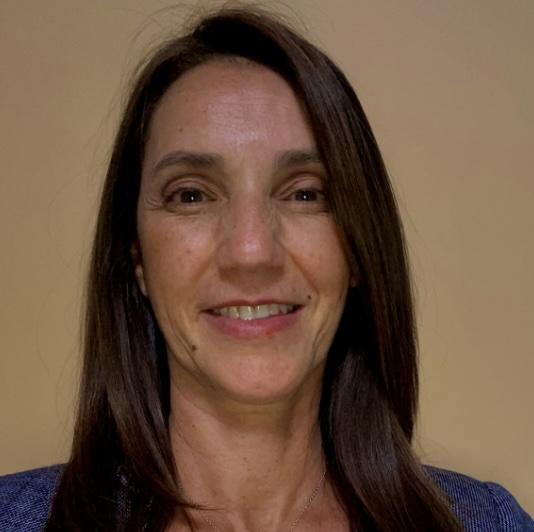

Karina de Sande
Ph.D. Candidate, Spanish Language and Literature

Experience
Instructor on Record
Department of Spanish and Portuguese, University of Maryland, College Park
2022 - 2026
Taught undergraduate Spanish courses across multiple levels, from novice to advanced grammar and composition, and upper-level literature. Developed and implemented a pilot course on gamification in L2 learning, as well as a course syllabus, case studies, and course materials.
Teacher Development Liaison (T.D.L.)
Glenelg High School - HCPSS
2022
Supported teacher development initiatives across the departments.
Spanish Teacher
Glenelg High School - HCPSS
2014 - 2022
Taught Spanish I through Spanish IV Honors, building foundational to advanced language proficiency in students.
Spanish Teacher
Escuela Argentina - Potomac, MD
2009 - 2019
Taught AP Spanish Literature and Culture and AP Spanish Language and Culture.
Spanish Instructor
Johns Hopkins University - Baltimore, MD
2009 - 2010
Taught Intermediate Level I & II courses as part of the Odyssey Program.
Graduate Assistant
Department of Spanish and Portuguese, University of Maryland, College Park
2024 - 2025
Supported departmental operations, including event coordination, faculty communication, and administrative logistics, working closely with the Department Chair.
Senior External Auditor
PricewaterhouseCoopers - Buenos Aires, Argentina
1993 - 1996
Conducted external audits for banks and financial entities.
Education
- Ph.D. Candidate, Spanish Language and Literature, University of Maryland, College Park, Expected May 2027
- M.A., Spanish Literature, Middlebury College, 2021
- B.A., Spanish & Minor in Latin American Studies, Notre Dame of Maryland University, 2013
- A.A.T., Secondary Education - Spanish, Howard County Community College, 2011
- Accounting, Universidad de Buenos Aires, 1995
Skills
- Curriculum design and culturally responsive teaching
- Gamified language-learning pedagogy for L2 Spanish instruction
- Fluent in Spanish (native), English (fluent), and Portuguese (intermediate)
- Event coordination and departmental administrative support
- Financial auditing (banks and financial entities)